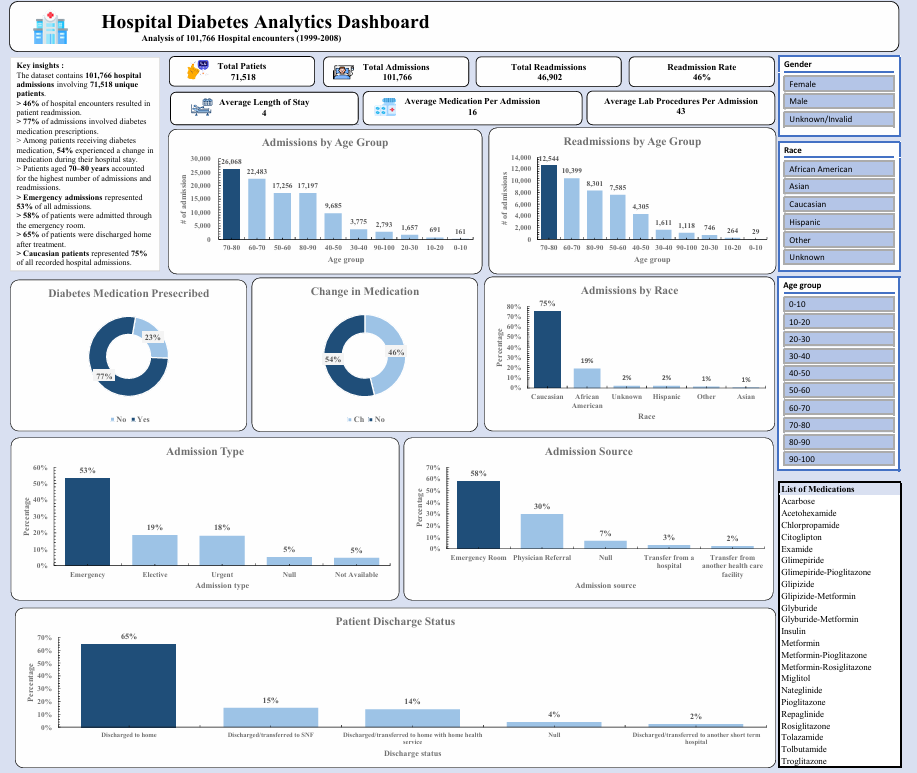
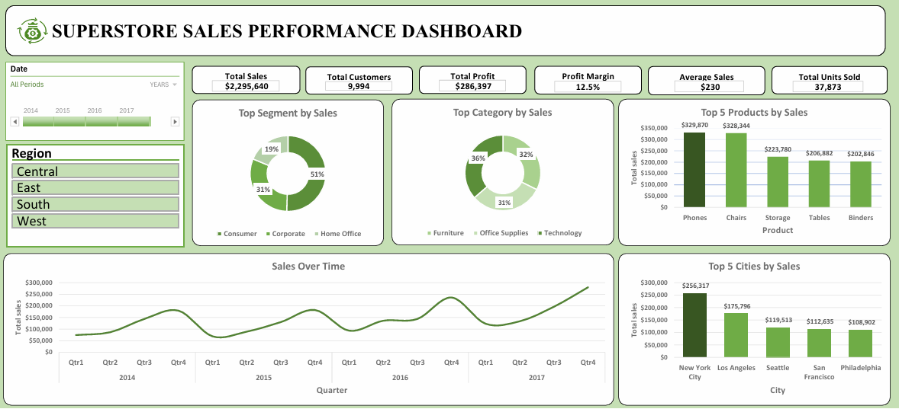

I am a data professional with experience in data management, monitoring and evaluation, data quality assurance, reporting, and data analysis. I combine practical programme experience with growing expertise in analytics and business intelligence to turn data into reliable insights that support evidence-based decision-making.
Data professional combining data management, monitoring and evaluation, data quality, and analytics.
I am a data professional with experience in data management, monitoring and evaluation, data quality assurance, reporting, and data analysis.
In my professional experience, I work with programme data to support reporting, data quality, monitoring activities, and evidence-based decision-making. This includes reviewing and validating data, maintaining databases, identifying data gaps, and preparing reliable information for management and donor reporting.
Alongside my professional experience, I am building my technical capabilities in data analytics and business intelligence through hands-on projects using tools such as Microsoft Excel, Power Query, Power Pivot, DAX, and Looker Studio.
Developing practical skills in data analysis, visualization, dashboard development, KPI analysis, and business intelligence to turn datasets into useful insights.
Experience supporting programme monitoring, reporting, results measurement, data collection, and the use of evidence to understand programme performance and impact.
Experienced in data validation, database maintenance, data quality assurance, identifying missing or inconsistent information, and preparing reliable data for analysis and reporting.
I combine my experience in programme data and monitoring and evaluation with growing analytical and technical skills. My goal is to bridge the gap between data collection, data quality, analysis, and decision-making — helping organisations transform reliable data into clear information that can support better decisions.
Practical experience working with programme data, monitoring, data quality, reporting, and analysis.
Support programme monitoring, data quality assurance, reporting, database management, and analysis to provide reliable evidence for management and donor decision-making.
Supported programme data collection, verification, database maintenance, data quality assessments, and reporting for wildlife justice and monitoring programmes.
A selection of professional and personal analytics projects demonstrating my experience in data analysis, data quality, dashboard development, and data-driven decision-making.
Google Data Studio (Looker Studio)
Developed an interactive dashboard to monitor pangolin weight changes during rehabilitation, enabling the rehabilitation team to track weight progression over time and support monitoring of animal recovery.
Google Data Studio (Looker Studio)
Analysed visitor patterns by day, time, and visitor group to identify peak periods and provide evidence to support management decisions around opening hours, staffing allocation, and visitor operations.

Microsoft Excel | Power Query | Power Pivot | DAX
Objective: Analyse hospital encounter data to understand patterns in patient admissions, readmissions, medication usage, demographics, admission sources, and discharge outcomes.
What I did: Cleaned and transformed the dataset using Power Query, connected related datasets using Power Pivot, created analytical measures using DAX, and developed an interactive dashboard.
Key findings: The analysis covered 101,766 hospital encounters involving 71,518 unique patients and identified a 46% readmission rate. Patients aged 70–80 accounted for the highest number of admissions and readmissions.

Microsoft Excel
Objective: Analyse sales performance across customer segments, product categories, products, cities, regions, and time.
What I did: Cleaned and analysed the sales dataset, created an interactive Excel dashboard, and developed visualisations to compare business performance across multiple dimensions.
Key findings: The Consumer segment was the largest contributor to sales, while Technology was a leading category. The analysis also highlighted differences in sales performance across products, cities, regions, and time.
A combination of practical data management and monitoring experience with developing data analytics and business intelligence capabilities.
Continuous professional development through structured courses, skill tracks, and practical learning in data analytics, artificial intelligence, and monitoring and evaluation.
DataCamp — 2026
DataCamp — 2026
DataCamp — 2026
DataCamp — 2026
DataCamp — 2026
DataCamp — 2026
2025
2024